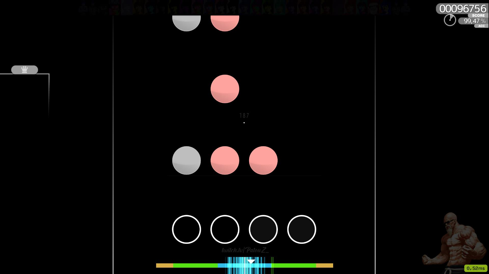

osu!mania est l'un des 4 modes de jeu disponibles dans osu!. C'est un VSRG (vertical sliding rhythm game) qui se joue de manière similaire aux jeux de rythme arcade tels que Beatmania IIDX et Dance Dance Revolution. Dans osu!mania, des touches sont appuyées au rythme de la musique suivant une disposition de touches personnalisable.
Le gameplay d'osu!mania est centré sur l'utilisation de touches correspondant aux colonnes à l'écran (souvent 4 ou 7). Les notes défilent vers le haut ou le bas de l'écran, et le joueur doit appuyer sur les touches correspondantes au bon moment pour les attraper en rythme avec la musique. Plusieurs niveaux de difficulté et de nombre de touches sont disponibles, offrant ainsi un défi adaptable à tous les niveaux.
La communauté d'osu!mania est active et organise régulièrement des tournois, des événements et des compétitions en ligne. Les joueurs peuvent rivaliser pour atteindre les meilleurs classements mondiaux dans différentes catégories de difficulté. Il existe également de nombreuses cartes créées par la communauté, offrant une variété infinie de contenu à jouer.
Si vous souhaitez jouer à osu!mania, vous pouvez télécharger le jeu sur le site officiel : osu.ppy.sh